Know what Claude is doing at a glance
The pet sits in a corner of your screen and changes with your sessions, so you can keep working and look over when it moves.
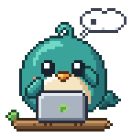
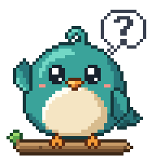
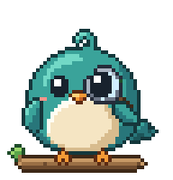
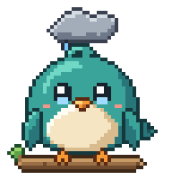
What it does

Every session on a card
Each Claude Code session, in VS Code, a terminal or the desktop app, shows above the pet as working, needs you, done or failed. Click a card to jump back to its project.

Answer permission prompts
Allow or Deny a command, file edit or web fetch from a card that shows exactly what will run. Nothing is pre-selected and no key answers a card.

Ask from the desktop
Click the pet, pick a project and type. Your own Claude Code answers in a small chat above the pet, and follow-ups continue the conversation.
- A pet that reacts. It types while Claude works, holds up a "?" when a session needs you, inspects the result when it's done, and sits under a storm cloud when something fails.
- Out of the way. Everything around the pet is click-through, and its buttons only appear when you hover over it or use it. Tuck the cards away and the Show threads button keeps count.
- Calm. Long runs and failures settle after a while; only "needs you" keeps moving until you answer. Reduced-motion settings are followed.
- Notifications when a session finishes, fails or needs you. On Windows, clicking one opens that session.
- Keyboard and screen reader support for the pet, its cards and Settings.
- Updates itself with signed updates, checked once a day. You can turn this off.
Nine pets to choose from
Pick one when you set up, switch any time from the pet's right-click menu, and give it a name of your own.
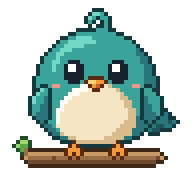
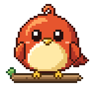
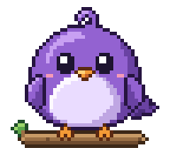
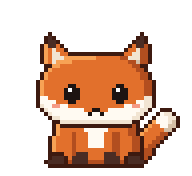
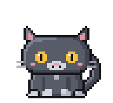
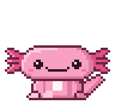
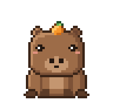
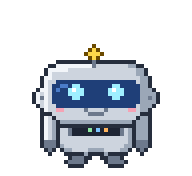
Or make your own
A pet is just a folder with a spritesheet and a small pet.json. No code, no build step.
- Draw it on the template: nine rows of frames, one per mood, in pixel art or anything else.
- Name it in a
pet.jsonnext to the sheet, with a display name and a one-line description. - Drop the folder in the pets folder (Settings → About → More pets → Open folder) and pick it from the pet's right-click menu.

The full guide to making a pet has the exact sizes, frame counts and a checker.
How it works
- Claude Code's hooks, on your computer. With your OK, Devlings adds a few hooks to Claude Code's
settings.json. Each session then reports its progress to Devlings over127.0.0.1; if Devlings isn't running, the hooks fail fast and silently. A backup is kept before every change, and one click removes exactly Devlings' entries. - Your own Claude Code, on your own subscription. When you ask from the pet, Devlings runs the Claude Code you already have, logged in with your Claude plan. It never uses an API key and has no account of its own.
- Nothing else leaves your computer except a daily check for a new version on GitHub, which you can turn off. Your prompts go to Anthropic through your own Claude Code, exactly as from a terminal. This page runs no scripts and loads no fonts or trackers. More detail.
Questions
Is it free?
Yes. Devlings is free and open source under the MIT license, with no paid tier and no account.
What do I need?
Claude Code 2.1.259 or newer, logged in with a Claude subscription (Pro, Max, Team or Enterprise). Windows 11 is tested on real hardware. macOS and Linux (AppImage and .deb) are in beta: they build and launch in CI on every change but haven't been tried on real hardware yet.
Will Windows warn me when I install it?
Yes, the first time. The installer isn't signed with a paid certificate, so SmartScreen says "Windows protected your PC": click More info, then Run anyway. Install notes for every system.
What does it cost to use?
Watching is free: Devlings only listens to Claude Code's hooks, so no prompts are sent. Asking from the pet runs your own Claude Code in non-interactive mode, which draws on the monthly Agent SDK credit that comes with paid Claude plans. Devlings never uses an API key, and it stops a run the moment Claude Code reports it would start using paid usage credits. How Asks are counted.
Does it work with VS Code, the terminal and the desktop app?
Yes. Devlings watches every Claude Code session through Claude Code's own hooks, wherever it runs: the VS Code extension, a terminal or the desktop app.
Does it need an API key?
No. Devlings never uses an API key. Watching sends nothing anywhere, and asking from the pet runs the Claude Code you already have, logged in with your Claude subscription.
Is it made by Anthropic?
No. Devlings is an independent open-source project that works with Claude Code. It is not affiliated with or endorsed by Anthropic.
How do I remove it?
On Windows, uninstall it from Settings → Apps; that also takes its hooks out of Claude Code. On macOS and Linux, click Settings → Watching → Remove first, then delete the app. Uninstall details.